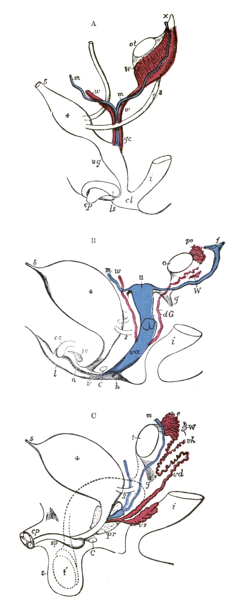

第 4 章
恶心的智慧
一个人坐在平稳行驶的汽车里，眼睛盯着手机屏幕。胃里没有来由地泛上一阵潮热，唾液多起来，额头冒汗。他抬起头看窗外，景物向后掠过，身体没有动，可胃已经准备要清空自己。

人体前庭系统与呕吐中枢示意图
图源：维基共享资源 · Henry Vandyke Carter · Public domain
他没有中毒，也没吃坏东西。但大脑里一段古老的协议刚刚被触发了。在所有身体信号里，恶心也许是最具进化智慧的一种。它的触发逻辑在现代世界已经严重过载。
上一章我们看见，疲劳如何用古老的节能语法翻译全新环境，把持续低度压力误读成必须休息的威胁。这种“翻译错误”，在另一个古老信号上体现得更为典型——恶心。它比疲劳更古老，更不讲条件。它一旦拉响，几乎不给人商量的余地。
要理解恶心这张警报网，不妨从它最典型也最常被误解的场景看起：怀孕早期。许多女性在怀孕最初几周，还没显怀，先熟悉了一个新习惯：清晨醒来的第一件事，不是睁眼，而是冲进洗手间。早先爱喝的咖啡，现在闻一下就想躲；冰箱里的隔夜菜，光是打开门都有反胃的感觉。人们把这叫作晨吐。传统医学把晨吐归因于孕期激素急剧变化，尤其是人绒毛膜促性腺激素。
这有数据支撑：激素水平升得最猛的那几周，恶心也最明显。但相关不等于因果。
激素解释的是即时反应，却没有回答一个更根本的问题：为什么进化会允许这样一套让人呕吐、丢失水分和营养的程序存在？呕吐在食物匮乏的远古环境里不是没有代价。它让孕妇流失电解质和热量，削弱母体体力。如果晨吐纯粹是一种故障，自然选择有充分时间把容易严重孕吐的个体慢慢淘汰。它没有消失，反而广泛保留。
这一条线索，值得追问下去。为什么进化会保留这样一种看似削弱母体、增加能量消耗的反应？这是因果追问的第一环。
答案藏在一个时间重合理。怀孕早期，特别是受孕后第六周到第十二周，是胎儿器官发育最关键的窗口期。神经管在这个阶段闭合，中枢神经系统的雏形正在形成。心脏从一根直管开始分隔出左右腔。四肢的芽基从身体两侧伸出来。这些过程中的细胞分裂、迁移和分化极为活跃，也极为脆弱。任何干扰，哪怕只是一阵化学信号打乱，都可能造成不可逆的伤害。医学上把这类因素称为致畸物。
它们可能是一种药物，可能是一种植物毒素，也可能只是腐败食物里某种细菌的代谢产物。而晨吐的高峰期，恰好与这个关键窗口高度重叠。
这不是巧合。进化医学中有一个相当有力的解释框架，叫作胚胎保护假说。它认为，晨吐不是怀孕的故障，而是一套主动、精密的化学侦察与回避防线。它让孕妇对苦味、腐败味和某些植物毒素高度敏感，在摄入之前就产生厌恶和呕吐冲动，主动避开可能含有害物质的食物。换句话说，晨吐把防线从消化道的后端，移到了行为的最前端。食物还没进口，警报已经拉响。
在人类漫长的采集与狩猎历史中，这样做的收益非常清晰。植物会为了防御昆虫和动物啃食，制造各种化学武器。生物碱、氰苷、皂苷，这些东西往往带苦味。腐败的肉类滋生大量细菌，散发出胺类物质特有的气味。一个不设防的孕妇如果照常进食这些食物，胎儿暴露在致畸物中的概率会高得多。很多跨文化记录显示，传统社会里的孕妇会本能地回避一些当地常见的苦味野菜或特定肉类。
她们未必能说出那些植物含有什么化学成分，但身体已经替她们做了选择。晨吐的强度也有时间偏好：最危险的那几周最强烈，之后逐渐减退。这套防线的智慧在于，它不在毒素进入血液、造成实际损伤之后才启动清除，而是在摄入之前就用恶心和厌恶把危险挡在嘴外。
这就是恶心作为防御指令的原型。它针对的不只是食物本身，而是食物背后那个更抽象的危险：化学毒素进入血液。
一旦大脑认定你摄入了可疑物质，标准的解毒程序就启动了。这个程序说起来简单得几乎粗暴：把胃里的东西清空。吐出去，不管它是什么，先吐出去再说。
现在把这个逻辑从孕妇身上移开，投向一个看似完全无关的场景：你在车上。车在平稳地行驶，窗外的树木向后掠过。你没有吃东西，没有闻到什么怪味，甚至不觉得紧张。但胃里开始发潮，唾液分泌增多，额头渗出一层细汗。再过几分钟，你可能会吐。晕车。大多数人把它理解成身体太弱，或者耳朵太敏感，或者只是单纯的不舒服。
但进化医学给出的答案依然出人意料：晕车不是身体的失败，而是大脑在执行同一套古老的解毒协议。它误判了情况。关键在这里。
先说直觉，再上术语。你坐在车里，身体并没有在动。你的肌肉没有收缩，四肢没有摆动。但耳朵里报告运动的部分，正在发出信号。内耳深处有几个互相垂直的微型水环，叫半规管，里面装满液体。
头部转动，液体跟着晃，细小的感觉毛被拨动，于是大脑收到“动”的报告。另外还有两块耳石，负责报告直线加速和重力方向。当汽车加速、减速或转弯时，前庭系统会向大脑报告：我们正在移动。你的眼睛如果正盯着手机屏幕或车内地板，它们会报告一个完全相反的信息：环境没有变化，我们并没有动。这两个信号在脑干附近相遇，彼此矛盾。
大脑必须解释这个矛盾。在人类漫长的进化史上，能够同时造成前庭兴奋和视觉静止的，只有一个常见原因：你吃了某种神经毒素。许多神经毒素会干扰中枢神经，让运动信号和视觉信号失去同步。吃了某些毒蘑菇或植物，人会感到周围在转，自己没动。
身体对此早有对策：把胃里可能还没完全吸收的毒素吐掉，越快越好。于是大脑启动一套固定程序：恶心、唾液增多、胃排空。这套程序今天依然存在。当汽车、轮船、飞机这些现代交通工具制造出前庭和视觉之间的错配时，大脑据以判断的古老算法不会说“这是车，这是船，这是安全的被动运动”。它只会说：前庭兴奋，视觉静止，这两样合在一起，在旧环境里意味着中毒。执行解毒程序。
所以你在车上感到恶心，不是身体太弱，是你的大脑在执行一套古老的解毒协议。它不知道汽车是什么。它执行的是更新世草原上写下的代码。这套代码的触发条件非常具体，但它的逻辑在现代社会里被无限放大了。
这就是本章最关键的一步：恶心的触发阈值，在现代环境中被大幅拉低了。在远古环境里，能触发这套系统的东西并不多。腐败的食物，带苦味的植物，真正的中毒。它的误报率很低，因为环境里的化学威胁相对有限。但在现代社会，这套系统面对的是一个完全不同量级的刺激密度。
从腐烂食物的气味到人造化学品的味道，从摇晃的交通工具到虚拟现实的视觉运动错配，从强烈香水到某些药物，从过山车到3D电影，触发源无处不在。这套进化来保护你的系统，正在对大量无害刺激拉响警报。实验室里的老鼠如果第一次吃到一种没尝过的味道，然后被注射了导致恶心但不至死的药物，它们以后会拒绝吃这种味道，甚至几个月后还记得。这种味觉厌恶条件化一次就能建立。食草动物误食有毒植物后会学习哪些草能吃，哪些要躲开。这些行为背后的逻辑，和人类的恶心反应属于同一类。它们不是偶然的副作用，而是针对特定问题的专门解决方案。
反过来说，这种过度敏感恰恰证明了这套系统的原始设计不是没有道理的。它在食物丰富、交通发达、娱乐方式层出不穷的现代世界里频繁误报，不是因为程序本身出了故障，而是因为它太忠于原来的任务了。它像一个守旧的门卫，看见所有晃动的东西都要拦住盘问。这个门卫保护了无数孕妇，帮助了无数误食毒素的祖先。但今天，他要拦下的东西，早已不是原来的敌人。
这里有一个反方解释需要认真对待。有人说，这些信号不过是进化遗留的缺陷或副产品，在远古环境中可能中性甚至有害，只是在现代才显得格外刺眼。
这个说法并非全无道理。进化的确不会产出完美设计。许多身体特征确实是历史包袱。
但恶心不太像包袱。它太精准了。它的触发条件与化学威胁之间的对应关系过于稳定，它在孕妇身上的时间窗口太过精确，它在动物界中的分布也太过广泛。
当然，这绝不意味着你应该忍受所有恶心。理解一套系统的进化逻辑，不等于否认它带来的痛苦。恰恰相反。看清恶心不是个人软弱，而是古老协议在现代环境中的固执运行，这个判断本身就是一种解脱。你不再需要责怪自己体质差，不再需要把它理解成某种需要克服的心理问题。你看见的是一套古老防御协议，被放置在一个它从未遇见过的世界里。
这种认知还有一个更实用的结果。如果你知道恶心是一套化学防御系统，你就可以反过来利用这个逻辑来理解它给出的信息。
在追问“为什么进化会保留晨吐”之前，我们需要先看清这套反应在时间轴上的精确位置。受孕后第六周到第十二周，这个窗口不是随意划定的。神经管闭合发生在受孕后第四周末到第六周初。如果闭合失败，会导致脊柱裂或无脑儿这类严重畸形。心脏分隔的关键步骤集中在第五到第八周。四肢芽基的出现和分化在第六周到第八周达到高峰。腭的闭合稍晚，但也在第十二周之前完成。换句话说，所有主要器官的结构蓝图都在这个阶段一次性画定。过了这个窗口，后续的发育主要是生长和功能成熟，致畸物造成结构性破坏的风险急剧下降。
晨吐的时间分布与这个窗口高度吻合。大规模流行病学调查显示，孕吐症状通常在受孕后第四到第五周出现，第八到第九周达到峰值，第十四到第十六周显著缓解或消失。峰值恰好落在器官发育最密集、致畸风险最高的那几周。这不是激素波动能完全解释的。激素水平在孕早期确实快速上升，但人绒毛膜促性腺激素的峰值出现在第八到第十周，之后缓慢下降；雌激素和孕激素在整个孕期持续升高，并不在第十六周回落。如果晨吐仅仅是激素的副作用，它的消退时间不应该与器官发育窗口的关闭如此同步。
胚胎保护假说正是从这个时间重合中获得了最有力的支撑。它不否认激素是近端机制——激素可能是大脑执行这套程序的具体化学工具——但它指出了远端原因：这套程序之所以被自然选择保留，是因为它在关键窗口期提供了明确的生存优势。二十世纪九十年代，进化生物学家玛吉·普罗费特将这一假说系统化，引发了持续至今的讨论。
她收集了跨文化的饮食禁忌数据，发现许多传统社会中的孕妇会主动回避某些特定的苦味植物、野生动物内脏和发酵食品。这些食物在现代营养学看来未必都有害，但它们共同的特征是含有较高浓度的次生代谢物——植物用来防御昆虫和真菌的化学武器，或者微生物分解蛋白质产生的生物胺。
一个具体的例子来自东非。马赛族孕妇在孕早期会严格避免食用当地一种叫作“ol-kiloriti”的苦味树皮汤，这种汤在平时被用作消化助剂和催情剂。化学分析显示，它含有高浓度的皂苷和生物碱，在动物实验中表现出子宫刺激和致畸潜力。另一个例子来自亚马孙流域。某些部落的孕妇在怀孕头三个月避免食用一种当地常见的块茎，因为它在未充分烹煮时含有氰苷。这些禁忌不是现代医学教育的产物。它们以“吃了会让孩子畸形”或“会让胎儿滑掉”的本土知识形式代代相传。而传递这些知识的载体，很可能最初就是孕妇本人的恶心和味觉厌恶。
这套回避系统的精妙之处在于它的前置性。普通人的解毒路径是：摄入毒素、肠道吸收、肝脏代谢、肾脏排泄。如果毒素剂量过高或代谢不及时，损伤已经造成。孕妇的路径被晨吐改写为：嗅觉和味觉在食物进入口腔之前就发出强烈厌恶信号，如果信号被忽视，胃部会在摄入后几分钟内启动呕吐反射，将尚未完全消化吸收的内容物排出。这是一套纵深防御。第一道防线是行为层面的回避，第二道防线是生理层面的清空。两道防线的时间窗口加在一起，把胎儿暴露在致畸物中的概率降到了极低。
现在我们可以回答那个因果追问了。为什么进化会保留晨吐？因为它在器官发育最脆弱的几周里，提供了一套廉价、高效、前置的化学防御系统。廉价是相对的：呕吐确实会流失水分和电解质，但在更新世环境中，短期能量损失和微量营养素丢失的代价，远低于胎儿中枢神经系统畸形的代价。一个脊柱裂的孩子在狩猎采集社会中的存活概率极低，母亲的繁殖成功也会因此受损。自然选择的天平在这种代价对比中，偏向了保留呕吐反应的那一边。
理解了晨吐的逻辑，晕车的谜题就变得透明了。但这里有一个细节需要展开：为什么大脑会把前庭-视觉错配解读为中毒，而不是别的什么？答案藏在内耳前庭系统的进化史里。半规管和耳石器官不是为坐车而设计的。它们最早出现在鱼类身上，用来感知水中身体的倾斜、旋转和加速度。当脊椎动物登上陆地，这套系统被保留下来并进一步精化，用于维持直立姿势、协调行走和跑步中的头部稳定。在几亿年的进化中，前庭系统接收到的运动信号几乎总是与肌肉运动、视觉流动和环境互动同步发生的。你跑起来，腿在动，视野在流动，内耳液体在晃。这三组信号彼此印证，大脑不需要费力去判断谁对谁错。
唯一的例外是中毒。某些神经毒素——比如酒精、颠茄生物碱、某些蘑菇毒素——会直接干扰前庭神经核或小脑的信号处理，导致前庭系统在没有真实运动的情况下自发兴奋。中毒者会感到天旋地转，周围景物在动，自己没动。与此同时，视觉系统报告环境静止。肌肉和关节报告身体没有位移。大脑面对的就是一组尖锐矛盾：前庭说“在动”，视觉和本体感觉说“没动”。在漫长的进化史中，这个特定矛盾模式的唯一常见原因就是化学毒素进入了血液循环。大脑据此建立了一条固定规则：如果前庭兴奋与视觉静止同时出现，执行解毒程序——先清空胃。
这条规则被刻进了脑干的呕吐中枢。呕吐中枢位于延髓网状结构，接收来自前庭系统、胃肠道化学感受器和更高层大脑皮层的输入。其中从前庭系统来的输入特别直接：前庭神经核通过内侧纵束和网状结构直接投射到呕吐中枢，不需要经过意识加工。这就是为什么晕车时的恶心来得又快又猛，你还没想明白自己是不是晕车，胃已经开始翻涌。这也是为什么闭上眼睛或者躺平有时能缓解——减少视觉输入可以降低信号冲突的强度，但前庭信号本身仍在持续，所以只能部分缓解。
视觉运动错配的现代版本比汽车更极端。虚拟现实头盔向眼睛呈现高速运动的画面，而内耳报告身体静止。这种错配的强度可以远超坐车，因为视觉流动占据了整个视野，大脑更难将其识别为外部图像。结果就是所谓的“虚拟现实晕动症”。同样的逻辑也解释了为什么有些人看3D电影会恶心，为什么在船上待在船舱里比站在甲板上看地平线更容易吐——看地平线时，视觉至少能捕捉到缓慢的晃动，与前庭信号部分匹配；待在船舱里，四面墙壁都是静止的，错配达到最大。
这些现象共同指向一个结论：恶心的触发阈值在现代环境中被系统性地拉低了。这不是一个比喻。它是字面意义上的阈值下调。
孕妇对某些食物产生强烈厌恶，未必是营养学上的错误，而可能是这套系统在告诉她：这些东西对你这一胎可能不安全。现代营养学和产前指南有它们自己的标准，两者不完全重合。但至少，当我们看见一位孕妇突然无法忍受咖啡的气味，或者一口也不想碰冰箱里的剩菜时，我们不应该急着说她矫情。也许她的身体正在执行一项古老任务，用恶心这个密令，把胎儿从潜在的化学威胁旁边推开。
把镜头再拉远一点。恶心所揭示的，不只是它自己。它揭示了一个更大的问题。疼痛保护组织，发烧对抗感染，疲劳调控能量，恶心防御化学毒素。这几套系统各有各的触发逻辑，各有各的古老语法。但它们在现代环境中，全都出现了不同程度的误判。
疼痛可以因为压力和情绪而放大，发烧可以因为医疗文化而被过度压制，疲劳可以因为持续低度威胁而变成慢性泥沼，恶心可以对汽车、轮船、电影和香水这些完全无害的东西拉响警报。这些不是彼此孤立的错误。它们同源。它们都是一套为另一个世界设计的身体操作系统，在应对一个全新世界时，不得不做出的笨拙翻译。
当不同指令同时叫响，身体听谁的？这个更根本的问题，需要从更高层面统观。它不应在这里被匆忙回答，但它的轮廓已经浮现：这些各自为政的信号，究竟从何而来，又被怎样的逻辑组织在一起。
现在，回到车上。窗外的景色依然在流动，胃里的潮涌没有停。你坐在那里，知道这种不适不是软弱，不是缺陷，而是一段古老的代码在执行它的职责。它固执，它迟钝，它认不出汽车。但它保护的诚意是真的。它不知道玻璃窗外没有捕食者，也不知道那一片片掠过的树影只是速度，不是毒素。它依旧按照几十万年前的协议执行，把一场平稳的旅程翻译成一次化学危机。胃里翻江倒海，窗外天光大亮。
它们都是一套为另一个世界设计的身体操作系统，在应对一个全新世界时，不得不做出的笨拙翻译。当不同指令同时叫响，身体听谁的？
这个更根本的问题，需要从更高层面统观。它不应在这里被匆忙回答，但它的轮廓已经浮现：这些各自为政的信号，究竟从何而来，又被怎样的逻辑组织在一起。现在，回到车上。窗外的景色依然在流动，胃里的潮涌没有停。你坐在那里，知道这种不适不是软弱，不是缺陷，而是一段古老的代码在执行它的职责。它固执，它迟钝，它认不出汽车。
但它保护的诚意是真的。它不知道玻璃窗外没有捕食者，也不知道那一片片掠过的树影只是速度，不是毒素。它依旧按照几十万年前的协议执行，把一场平稳的旅程翻译成一次化学危机。胃里翻江倒海，窗外天光大亮。